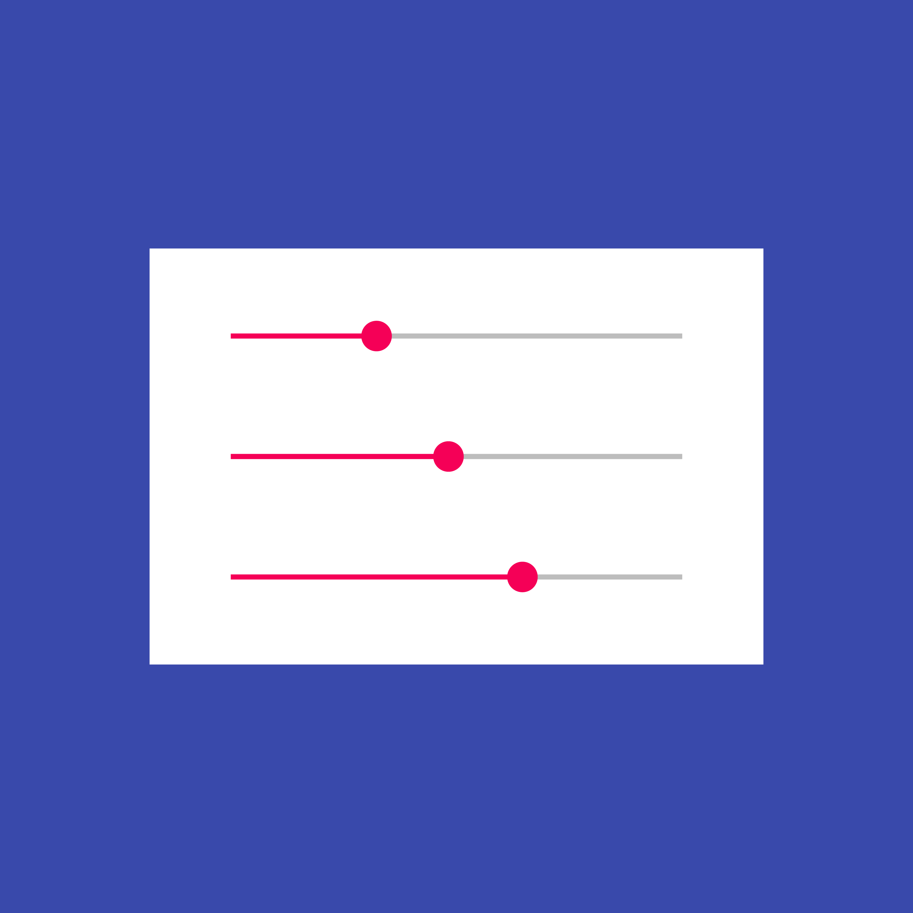

滑块控件允许用户通过移动滑块在一段范围内选择数值。
滑块非常适用于反映强度等级（如音量、亮度或色彩饱和度）。
在滑动条的两端可以放置用来反映强度的图标。将滑块范围的最小值放在左侧，最大值放在右侧。
连续滑块
连续滑块允许用户在主观范围内选择一个值，而不需要某个特定的数值，有时候也会提供可编辑的数值。
间续滑块
间续滑块允许用户从范围中选择某个特定的值。

滑块控件允许用户通过移动滑块在一段范围内选择数值。
滑块非常适用于反映强度等级（如音量、亮度或色彩饱和度）。
在滑动条的两端可以放置用来反映强度的图标。将滑块范围的最小值放在左侧，最大值放在右侧。
连续滑块允许用户在主观范围内选择一个值，而不需要某个特定的数值，有时候也会提供可编辑的数值。
间续滑块允许用户从范围中选择某个特定的值。
当用户的调整以主观感觉为主而不需要特定的数值时，请使用连续滑块。
打开 Thumb：主色调 500，不透明度 100%
打开轨迹：主色调 500，不透明度 100%
关闭 Thumb：#000000，不透明度 26%
关闭轨迹：#000000，不透明度 26%
聚焦和点击关闭 Thumb：#000000，不透明度 38%
聚焦和点击关闭轨迹：#000000，不透明度 38%
禁用（断开链接）：#000000，不透明度 26%
亮色主题
打开 Thumb：主色调 200，不透明度 100%
打开轨迹：主色调 200，不透明度 100%
关闭 Thumb：#FFFFFF，不透明度 30%
关闭轨迹：#FFFFFF，不透明度 30%
禁用（断开链接）：#FFFFFF，不透明度 30%
暗色主题
不同的滑块行为
图标与滑块栏左/右的间距：
滑块中图标的间距示例
滑块在正常、鼠标悬停、聚焦、点击和禁用状态下的示例
在用户需要设置精准数值时使用。按下 Thumb 后文本框进入编辑状态，并且数值会随着 Thumb 的移动自动改变。

可编辑数值的滑块示例

可编辑数值的滑块在正常、鼠标悬停、聚焦、点击和禁用状态下的示例
间续滑块的轨迹上有均匀分布的停靠点，Thumb 会紧贴于这些停靠点上。当用户的调整需要特定的数值，请使用间续滑块。用户可以直观的看出每个停靠点所改变的等级，用户无法编辑这些预先设定的等级。
当用户需要知道确切的数值时使用。

亮色主题

暗色主题
间续滑块的动画效果